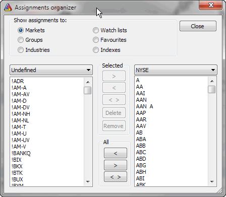

In order to make assigning the symbols to categories simpler and faster, a new assignment organizer was developed. Now you can simply mark a group of symbols and quickly move them from one category to another.
You can also delete multiple symbols using this window. To do so, select one or more symbols from the left pane and click on "Delete" button.
